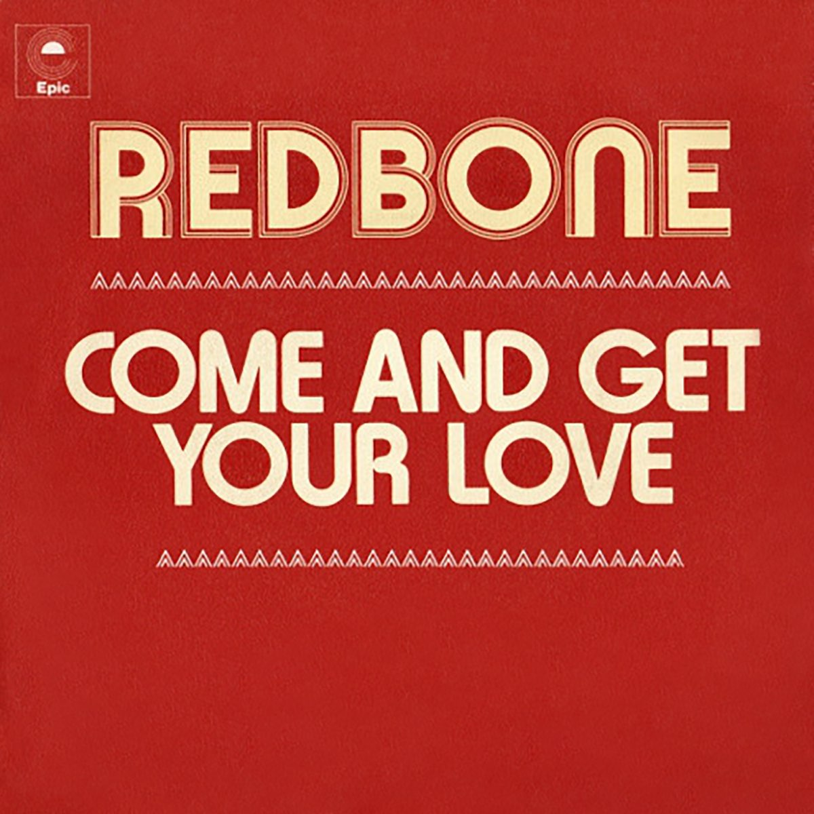

Star Lord
Peter Quill, mais conhecido como Star-Lord, é o carismático líder dos Guardiões da Galáxia e uma das figuras mais marcantes do universo espacial da Marvel. Nascido na Terra, mas levado ainda jovem para o espaço, Quill cresceu entre saqueadores intergalácticos, desenvolvendo habilidades únicas de combate, pilotagem e sobrevivência.
Conhecido por seu humor irreverente e personalidade descontraída, Star-Lord combina coragem e improviso em situações extremas. Apesar de sua aparência despreocupada, ele demonstra forte senso de liderança e lealdade, sendo peça fundamental na união e no sucesso de sua equipe.
Equipado com tecnologia avançada, incluindo suas icônicas pistolas elementais e sua lendária nave, a Milano, Quill enfrenta ameaças cósmicas enquanto mantém seu estilo único — sempre acompanhado por uma trilha sonora clássica que reflete sua conexão com a Terra.
Mais do que um herói, Star-Lord representa o equilíbrio entre humanidade e aventura espacial, mostrando que, mesmo em meio ao caos do universo, ainda há espaço para humor, amizade e redenção.

Come and Get Your Love
Redbone
Música Favorita
“Come and Get Your Love”, da banda Redbone, é uma das músicas mais marcantes para Peter Quill, representando sua forte conexão com a Terra e com sua infância. A canção faz parte da lendária mixtape deixada por sua mãe, sendo um símbolo emocional importante em sua vida.
A música aparece logo no início de sua jornada, em uma cena icônica onde Star-Lord dança descontraidamente em um planeta alienígena, mostrando seu estilo único e irreverente mesmo em meio a situações perigosas.
Mais do que apenas uma trilha sonora, essa música define a personalidade do personagem: leve, nostálgico e cheio de atitude — um verdadeiro herói que nunca perde seu ritmo.